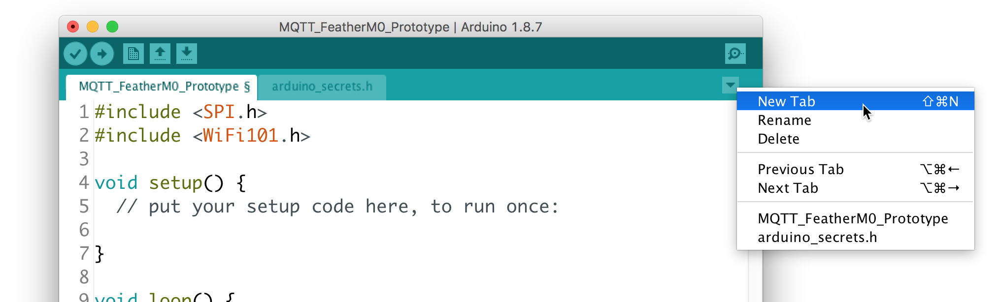
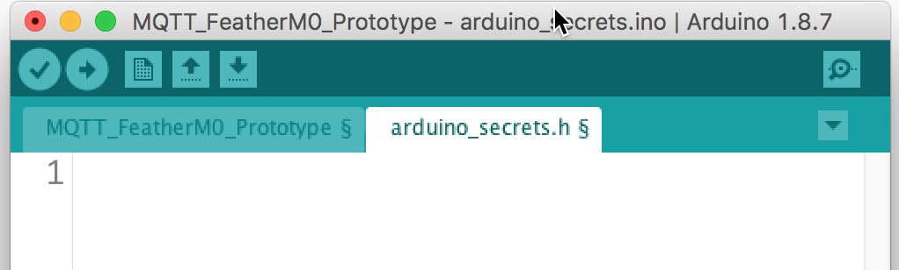
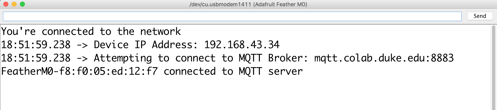
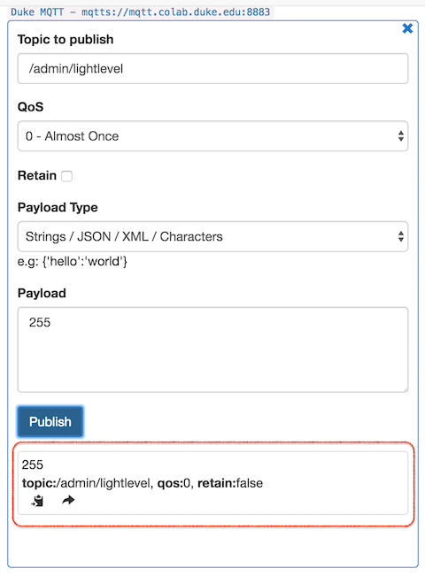

About this Tutorial
This tutorial outlines a workflow for implementing MQTT communication on the Adafruit Feather M0, leveraging the following Arduino libraries:
Before you begin, please install these libraries using the Arduino IDE's Library Manager.
For the purposes of this tutorial, imagine that you want to be able to control the lighting at the entrance of every administrative building on campus. To accomplish this, you deploy a fleet of Feather M0's to each building. Each Feather is connected to an LED light. One Feather will function as your "control center", so it will need a potentiometer for setting brightness levels.
As a baseline functionality, we want to be able to control the brightness level of ALL of the Feather-connected LEDs on the network, simultaneously adjusting them from one location.
Let's prototype this: Wire up a potentiometer to your Feather M0, terminating its wiper terminal at analog pin A1. We will make use of the onboard LED (@ pin 13) to save some time but you are welcome to include an LED and appropriate resistor for a 3.3V logic level.

Once you've wired up your hardware like the image above, you can continue below with either the Quick Start Guide that builds modularly off of a sample code, or with the Detailed Instructions, which walk step-by-step through the entire process of constructing a functioning project.
Quick Start Guide
This Quick Start Guide will make use of a heavily commented codebase that has been structured to allow for easy setup and customization of an MQTT client node.
-
First, download a .zip file of the code and unzip it.
-
This zip file contains two files:
MQTT_FeatherMO.inoandarduino_secrets.h. Rename the unzipped folder toMQTT_FeatherMO. (Arduino requires that the containing folder name match the main .ino sketch name.) -
Double-click on the
MQTT_FeatherMO.inofile to open it in Arduino. -
The sketch contains two tabs. Click on the
arduino_secrets.htab and set your WiFi network's SSID and password (if applicable).
-
Return to the MQTT_FeatherM0 tab.
-
Scroll down to lines 28 and 29 and set your MQTT_BROKER address and MQTT_PORT. If your desired broker is TLS/SSL capable, you will use port 8883. If not, use the default port 1883. Since our broker,
mqtt.colab.duke.eduis capable of TLS/SSL, lines 28 and 29 should read:#define MQTT_BROKER "mqtt.colab.duke.edu" // specify MQTT broker address (IP or URL) #define MQTT_PORT 8883 // use 8883 for TLS/SSL MQTT; use 1883 for non-secure
-
Look at lines 31 - 35. If your broker is NOT SSL/TLS capable, comment out line 32 and uncomment line 35. In our case, since our broker is TLS/SSL enabled, we can leave these lines unchanged.
-
Scroll down to the "PIN DECLARATIONS" section of the code. Here is where you would declare any constants to hold pin #'s for the hardware pins you need your project to employ. In our case, we want to use pin
13asledPinand pinA1assensorPin, so uncomment lines 54 and 55, as illustrated below:// **** // PIN DECLARATIONS // // Pin declarations for Feather hardware control // Modify as necessary for your hardware setup. // Don't forget pinMode in the setup() function! // **** // examples: const int ledPin = 13; // onboard LED const int sensorPin = A1; // analog input, such as potentiometer
-
Next scroll all the way down to the sketch's
setup()function and find the "PINMODE DECLARATIONS" section. Here is where you will need to set thepinModeof any pins specified above. In our case, we want to set the pinMode ofledPintoOUTPUTand ofsensorPintoINPUT. Uncomment lines 181 and 182, as indicated below:// **** // PINMODE DECLARATIONS // Any pinMode declarations should be set here // **** pinMode(ledPin, OUTPUT); pinMode(sensorPin, INPUT);
-
Scroll back up to the "SUBSCRIPTIONS SECTION" (around line 60). If your project needs to subscribe to any MQTT topics, here is where you both a) subscribe to the topic(s) and b) specify what your Feather M0 should do upon receiving an incoming message at that topic(s).
-
Continue to Part A:
doSubscriptions(): Here you can specify -- one per line -- any topics that you would like your Feather M0 to subscribe to from the MQTT broker. These follow the syntaxclient.subscribe("/some/topic");Let's specify a subscription to the topic
/admin/lightlevel. Add this line to thedoSubscriptions()function, before its closing}, as illustrated below:void doSubscriptions() { // Specify topic subscriptions line by line below, such as // client.subscribe("/some/topic"); // client.subscribe("/another/topic"); client.subscribe("/admin/lightlevels"); }
-
Next we need to specify what happens when the Feather receives an MQTT message at a subscribed topic. Scroll down and find "PART B - Handle parsing of specific topics below..."
Here we do a string compare of the incoming topic against a specific topic we expect to receive and parse that message accordingly. The generic syntax for such parsing is:
if (strcmp(topic, "/some/topic/") == 0){ //Do something with its payload }
In our case, we want to do something when a message comes in at topic
/admin/lightlevel, namely, adjust the onboard LEDs brightness. Add the following code immediately below the line/////// TOPIC SPECIFIC PARSING GOES HERE(approx line 116) and above the closing}for theparseMQTT()function (approx. line 118 )//this listens for a topic called "/admin/lightlevel" // and then converts its payload string into an integer // using the atoi() function. It then sets the ledPin level // accordingly using the analogWrite() function if (strcmp(topic, "/admin/lightlevel") == 0) { int brightness = atoi((char*)payload); Serial.print("Brightness: "); Serial.println(brightness); if (brightness < 3){ analogWrite(ledPin, 0); // Turn LED fully off Serial.println("All OFF"); } else if (brightness > 252){ analogWrite(ledPin, 255); // Turn LED fully on Serial.println("All ON"); } else { analogWrite(ledPin, brightness); // set ledPin brightness } }
If all we need to do in our project was subscribe to MQTT topics and parse incoming messages at those topics, we could stop here. However, we also need at least one of our nodes to be publishing sensor data (in this case, potentiometer settings) to the MQTT broker.
-
-
Scroll down to the "MQTT PUBLISHING SETUP" section. Here you can first set one or more intervals for the Feather to trigger PubSub
publish()functions. A single interval can trigger any number of publish events. For example, you might want to publish to four different topics every 500 ms. And/or different intervals can be set for different topics. For example, you may wish to publish the value of a potentiometer every 100 ms but a temperature reading only every 15 minutes.We want the client LEDs to be quickly notified of any changes in the potentiometer setting so that they can update their brightness in near real-time. So we'll set up a 100 ms interval for our publishing. Under Part 1, find the
setPubIntervals()function and inside the function, add the following line as highlighted below:void setPubIntervals() { // syntax: doPub.every(milliseconds, callbackFunction); //doPub.every(100, someFunc); // call the someFunc() function every 100 ms doPub.every(100, publishLightlevel); }
-
Finally, you need to write the callback functions specified in the interval timers above. The generic syntax is:
bool someFunc(void *) { client.publish("/some/topic", "value_as_string", false); // true:false --> retained return true; // repeat --> true }
In the example below, every 100 ms (the interval set in Part 1 above), the function
publishLightlevel()executes, which reads the analog value at sensorPin, maps it to a value between 0 - 255 (8 bit) and then converts that numerical value to a character array c string. It then publishes that value to MQTT topic/admin/lightlevelwith a retain flag set tofalse.Insert the code below at line 172 (
///////// doPub callback functions go here):///////// doPub callback functions go here bool publishLightlevel(void *) { int reading = analogRead(sensorPin); // read the potentiometer reading = map(reading, 0, 4095, 0, 255); // Feather M0 set to 12-bit ADC char value[3]; String msg = String(reading); msg.toCharArray(value, 3); client.publish("/admin/lightlevel", msg.c_str(), false); return true; // repeat? true }
-
Verify and upload the sketch to your Feather M0.
-
Once your Feather connects to Wifi and to the MQTT broker, manipulating the potentiometer should dynamically adjust the brightness of your onboard LED.
Detailed Instructions
Part 1 - WiFi Connection
As you learned in our initial Feather tutorial, connecting to the internet requires using the Arduino WiFi library so that the Feather's ATSAMD21G18 ARM Cortex M0 processor can communicate with its Atmel WINC1500 WiFi chip. Let's begin by walking through the steps necessary to connect the Feather to a WiFi network.
-
Launch the Arduino IDE.
-
Create a new sketch by choosing File --> New from the main menu.
-
Save that sketch as "MQTT_FeatherM0_Prototype" by choosing File --> Save from the main menu.
-
Ensure that you have "Adafruit Feather M0" selected under Tools --> Board.
-
Add the WiFi101 and SPI libraries to your sketch by either:
- Choosing Sketch --> Include Library --> WiFi101 and Sketch --> Include --> SPI
-- or --
-
Typing the following code at lines 1 and 2 of your sketch:
#include <SPI.h> #include <WiFi101.h>
-
It's considered a best practice to keep your WiFi access credentials in a separate header file. To create one, find the ▾ symbol and left-click on it. In the pop-up, choose New Tab.

(Alternatively, you can press SHIFT-⌘-N)
-
You will be prompted to enter a name for this new tab. Type:
arduino_secrets.h -
A new tab will appear in your IDE workspace, as indicated below:

In this tab you will want to create defined constants for your ssid and wifi password (if a password is required for your wifi network):
#define SECRET_SSID "DukeOpen" // your network SSID (name) #define SECRET_PASS "" // your network password; leave empty for open networks
In the above example, the SSID is set to the open network,
DukeOpenwith no password. -
Save your sketch: File --> Save Return to the main tab of your Arduino sketch.
-
Between the library
#includesection and thevoid setup()function, add the following lines:// WiFi credentials and config #include "arduino_secrets.h" char ssid[] = SECRET_SSID; char pass[] = SECRET_PASS; int status = WL_IDLE_STATUS; // variable for WiFi radio's status WiFiSSLClient WiFiclient; // instantiate a secure WiFi client // use WiFiClient WiFiclient; for non-secure connections
This instantiates several variables necessary for WiFi connectivity and signals to the WiFI101 library that we wish to create an SSL-capable WiFi connection. If you don't need a secure connection, use
WiFiClient WiFiclient;instead. -
Next, turn your attention to the
void setup()function, replacing it with the following code:void setup(){ // Initialize Serial (useful for debugging) Serial.begin(9600); // Feather M0-specific WiFi pins WiFi.setPins(8, 7, 4, 2); // attempt to connect to WiFi network: while ( status != WL_CONNECTED) { Serial.print("Attempting to connect to SSID: "); Serial.println(ssid); // Connect to WiFi: if (sizeof(pass) == 1) { // if no password status = WiFi.begin(ssid); // connect with SSID alone } else { status = WiFi.begin(ssid, pass); // connect with SSID and password } // wait 5 seconds for connection: delay(5000); } // you're connected now, so print out a success message: Serial.println("You're connected to the network"); // print your Feather's IP address: IPAddress ip = WiFi.localIP(); Serial.print("Device IP Address: "); Serial.println(ip); }
-
Save and verify your Sketch.
-
Plug in your Feather M0 to the USB port of your computer.
-
Confirm that its USB port is recognized and selected in the Arduino IDE: Tools --> Port
-
Upload the code to your Feather and open your Serial Monitor.
-
Your Feather should connect to your desired network and indicate a successful connection on the Serial Monitor:

Part 2 - MQTT Connection
Next we need to add the code necessary to make a connection to an MQTT broker. We will use the PubSub Client by Nick O'Leary to connect to our broker.
Broker: mqtt.colab.duke.edu Port: 8883 (TLS/SSL)
The above broker is hosted on a virtual machine created using Duke's Virtual Computing Manager service. If there is interest, a future tutorial will outline how to set up and configure this service, leveraging the open source MQTT broker Mosquitto and for secure connectivity, EFF's Certbot and Let's Encrypt certificates.
For now, let's simply make use of this existing broker.
-
To include the PubSub Client library, add this code below the
#includestatement for the WiFi101 library at the very top of your sketch:#include <PubSubClient.h>
-
Next, add the configuration variables required by the PubSub Client. Add the highlighted lines below the line instantiating a secure WiFi client:
The code above specifies some defined constants for the MQTT broker and port, and then tells the PubSub client to use the WiFiClient as a communication channel. The rest of the code sets up some variables to be used later.WiFiSSLClient WiFiclient; // instantiate a secure WiFi client for TLS/SSL // use WiFiClient WiFiclient; for non-secure connections // MQTT configuration #define MQTT_BROKER "mqtt.colab.duke.edu" // specify MQTT broker address (IP or URL) #define MQTT_PORT 8883 // use 1883, or 8883 for TLS/SSL // use WiFi connection for MQTT communication PubSubClient client(WiFiclient); // each MQTT client should have a unique ID String device_id = "FeatherM0-"; // this will be used with Mac address for uniqueness // variables for non-blocking MQTT reconnection long lastReconnectAttempt = 0; long now; void setup(){
-
At the end of your
setup()function (but before its closing}), add the following:// get your Feather's MAC address: byte mac[6]; WiFi.macAddress(mac); String mac_address; for (int i = 5; i <= 0; i--) { if (mac[i] < 16) mac_address += "0"; mac_address += String(mac[i], HEX); if (i > 0) mac_address += ":"; } // append mac_address to device_id // for unique identification device_id += mac_address; // initiate first connection to MQTT broker client.setServer(MQTT_BROKER, MQTT_PORT); // specify a function to call upon receipt of a msg // on a subscribed channel; in this case parseMQTT() //client.setCallback(parseMQTT); // print info on MQTT broker Serial.print("Attempting to connect to MQTT Broker: "); Serial.print(MQTT_BROKER); Serial.print(":"); Serial.println(MQTT_PORT); lastReconnectAttempt = 0;
This code will get your Feather's hardware mac address and write it to the variable
mac_address.Then it concatenates "FeatherM0-" with your Feather's hardware mac address, rendering a unique identifier for your Feather when communicating with an MQTT broker.The
client.setServer()function configures the PubSub client to connect to the specified MQTT broker and port.The
client.setCallback()function indicates what function to call whenever the PubSub client receives an incoming message on a subscribed channel. In this case, it will call theparseMQTT()function, which we have yet to define. Consequently, let's leave theclient.setCallback()line commented out for now. -
We're getting close to having our code in place to connect our Feather to the MQTT broker. Scroll to the bottom of your Arduino code and replace the
setup()function with the following code:void loop(){ // get the current time now = millis(); // if MQTT connection lost if (!client.connected()) { // only attempt to reconnect every 5 secs if (now - lastReconnectAttempt > 5000) { // 5 secs since last reconnect attempt? lastReconnectAttempt = now; // Attempt to reconnect if (reconnect()) { lastReconnectAttempt = 0; } } } else { // MQTT client connected client.loop(); } }
This code checks to see if the PubSub client is connected to the MQTT broker; if not, it waits 5 seconds and attempts to connect by running the
reconnect()function, which we will define in the next step. If unsuccessful, it waits another five seconds and tries again. If successful, it runs the PubSubclient.loop()function, which continually checks that the connect is live and listens for incoming messages. -
Finally, add the following
reconnect()function below theloop()function (after theloop()function's closing}.)boolean reconnect() { if (client.connect(device_id.c_str())) { Serial.print(device_id); Serial.println(" connected to MQTT broker"); return client.connected(); } Serial.print("MQTT connection failed, rc="); Serial.println(client.state()); Serial.println("Trying again ..."); return 0; }
-
Verify and upload the code to your Feather M0. Open the Serial Monitor and confirm that you are successfully connecting to both your desired wireless network (e.g. DukeOpen) and MQTT server, as indicated in the image below:

Part 3: MQTT Subscriptions
MQTT protocol allows clients to subscribe to "topics" that may be published by other clients connected to the same MQTT broker. Client subscriptions are "blind" in that clients have no way of verifying if any other clients are publishing at that topic.
In the Arduino PubSub library, the function to subscribe to a topic is .subscribe("/some/topic" and must be called after a successful connection to the MQTT broker.
In our project, we want client Feather M0's in each administrative building to subscribe to the same topic (e.g. /admin/lightlevel) and use the information published to that topic to set the level of an attached LED. Let's set this up now.
-
Right above the
setup()function, declare a variable for the attached LED at pin 13:const int ledPin = 13; // onboard LED
-
Within the
setup()function, set thepinModeofledPintoOUTPUT:pinMode(ledPin, OUTPUT);
-
Next, create a new function outside of the
setup()andloop()functions calleddoSubscriptions()and subscribe to the topic/admin/lightlevelas highlighted below:void doSubscriptions() { // specify topic subscriptions line by line below, such as // client.subscribe("/some/topic/"); // client.subscribe("/another/topic/"); client.subscribe("/admin/lightlevel"); }
-
We need to call this
doSubscriptions()function after we establish an MQTT connection, so find the function calledreconnect()and add the highlighted line below:boolean reconnect() { if (client.connect(device_id.c_str())) { Serial.print(device_id); Serial.println(" connected to MQTT broker"); doSubscriptions(); // (re)subscribe to desired topics return client.connected(); } Serial.print("MQTT connection failed, rc="); Serial.println(client.state()); Serial.println("Trying again ..."); return 0; }
-
Now that we have subscribed to the desired topic, we need to add a function to our sketch that parses the incoming messages and executes some code on our Feather to change the onboard LED's brightness.
-
Recall in Part 2, #3 we left the
setCallback()function commented out? Find that line in yoursetup()function and uncomment it:This means that every time the PubSub client receives an incoming message at a suscribed topic, the// initiate first connection to MQTT broker client.setServer(MQTT_BROKER, MQTT_PORT); // specify a function to call upon receipt of a msg // on a subscribed channel; in this case parseMQTT() client.setCallback(parseMQTT);
parseMQTT()function will execute. -
Let's create that function, adding the following to your sketch:
void parseMQTT(char* topic, byte* payload, unsigned int length) { payload[length] = '\0'; // important - do not delete // Handle parsing of specific topics using the "string // compare" function to differentiate among topics if (strcmp(topic, "/admin/lightlevel") == 0) { int lightlevel = atoi((char*)payload); Serial.print("Light level: "); Serial.println(lightlevel); analogWrite(ledPin, lightlevel); } }
The code above will trigger upon message receipt, compare the
topicof the MQTT message, and if it matchesadmin/lightlevelit will convert the messagepayloadfrom a character array to an integer and use it to set the PWM analog level of pin 13.
-
-
Verify your code and upload it to your Feather M0.
-
If you would like to test your subscription now, you will need to download an MQTT client for your computer. If not, you can skip down to Part 4: MQTT Publishing.
-
Download and install MQTTBox (available for Mac, Linux, and Windows).
-
Once installed, launch the application.
-
Click on the "Create MQTT Client" button.
-
In the settings, use the following for
mqtt.colab.duke.edu:- Client Name: Duke MQTT
- Protocol: mqtts / tls
- Host: mqtt.colab.duke.edu:8883
- SSL / TLS Version: auto
- SSL / TLS Certificate Type: CA signed server certificate
-
The rest of the settings can be left unchanged.

-
Click on the "Save" button.
-
The resulting screen should indicate that MQTTBox has successfully connected to the broker with a green "Connected" indicator:

-
In the "Topic to Publish" pane, enter the following:
- Topic to publish: /admin/lightlevel
- Payload: 255
-
Then click the blue "Publish" button.
-
Click it again. Each time you click "Publish" you should get a notification at the bottom of the "Topic to Publish" pane indicating a message was published.

-
Check your Feather M0's onboard LED. It should shine at full brightness.
-
In MQTTBox, change the
Payloadfrom255to0and then click the Publish button again. Your Feather M0's onboard LED should turn off. -
Try
127as a payload. Your LED should shine at 50% brightness.
-
If you were to deploy a fleet of Feather M0's in each admin building this is the extent of the code you would need to install on each Feather. One Feather will need to serve as the "control," where an attached potentiometer will publish a value to /admin/lightlevel that each subscribed Feather will process to adjust their LED brightness. We will set up this publish functionality in the next part.
Part 4: MQTT Publishing
Finally, in this section we will make use of Michael Contreras' arduino-timer library to publish potentiometer data from our Feather M0 to the topic /admin/lightlevel.
-
At the top of your sketch, include the arduino-timer library:
#include <SPI.h> #include <WiFi101.h> #include <PubSubClient.h> #include <timer.h>
-
Find where you declared the constant
ledPinand add a line for the potentiometer attached to analog pin A1:const int ledPin = 13; // onboard LED const int sensorPin = A1; // potentiometer attached to A1
-
In your
setup()function, usepinMode()to setsensorPinas an input and also specify that the Feather M0's ADC can function at 12-bit resolution:pinMode(ledPin, OUTPUT); pinMode(sensorPin, INPUT); // default Arduino ADC resolution is 10-bit // but we can set it to the Feather M0 native resolution of 12-bit analogReadResolution(12); // gives values of 0 - 4095
-
Next, we'll make use the arduino-timer library to set up a publication interval of 100 milliseconds for publishing our potentiometer data. Just above the
setup()function, add the following:auto doPub = timer_create_default(); // create a timer with default settings void setPubIntervals() { // syntax: doPub.every(milliseconds, callbackFunction); doPub.every(100, publishPot); // call the publishPot() function every 100 ms } // In this example, every 100 ms (set in setPubIntervals above), // this function executes, which reads the analog value at sensorPin, // maps it to a value between 0 - 255 (8 bit) and then converts // that numerical value to a character array c string bool publishPot(void *) { int reading = analogRead(sensorPin); // read potentiometer reading = map(reading, 0, 4095, 0, 255); // Feather M0 set to 12-bit ADC char value[3]; // instantiate a character array to hold reading String msg = String(reading); // put reading into msg msg.toCharArray(value, 3); // convert msg to char array // publish to topic the msg as char * with a retained // setting of false (do not retain) client.publish("/admin/lightlevel", msg.c_str(), false); return true; // repeat? true }
-
Next, add the following line at very end of your
setup()function, but before its closing}:setPubIntervals(); // initalize any publish intervals
-
Finally, add the following line at the very end of your
loop()function, but before its clsing}:doPub.tick(); // tick the doPub timer
-
Verify and then upload your sketch to your Feather M0.
-
Once your Feather connects to Wifi and to the MQTT broker, manipulating the potentiometer should dynamically adjust the brightness of your onboard LED, as well as the brightness of any other Feather M0 which is connected to MQTT broker
mqtt.colab.duke.eduand subscribed to topic/admin/lightlevelusing the message parsing above.
Note
In my experience, a potentiometer wired to the Feather M0's analog pin and mapped to an 8-bit value never fully reaches 255 at the upper limit and never fully reaches 0 at the lower limit. As a consequence, when testing the code above you may have found that your Feather's onboard LED never fully turns off.
To fix this, consider this code for parsing the /admin/lightlevel incoming message. Replace your parseMQTT() function with:
void parseMQTT(char* topic, byte* payload, unsigned int length) { payload[length] = '\0'; // important - do not delete if (strcmp(topic, "/admin/lightlevel") == 0) { int brightness = atoi((char*)payload); Serial.print("Brightness: "); Serial.println(brightness); if (brightness < 3){ analogWrite(ledPin, 0); // Turn LED fully off Serial.println("All OFF"); } else if (brightness > 252){ analogWrite(ledPin, 255); // Turn LED fully on Serial.println("All ON"); } else { analogWrite(ledPin, brightness); // set ledPin brightness } } }
This will give you a buffer at either end of the potentiometer where the LED will either be fully on or fully off.
Some things you could do to further enhance this project include:
-
Save network bandwidth by triggering "publish" commands ONLY when the potentiometer value has changed since the last publish event. There's no reason to publish every 100 milliseconds when the value of the potentiometer hasn't changed!
-
Consider ways in which making use of the MQTT
retainedflag might make the entire system more robust. -
What changes would need to be made to the setup so that one could have potentiometer control at every node, where any one location can be used to control all of the other locations?